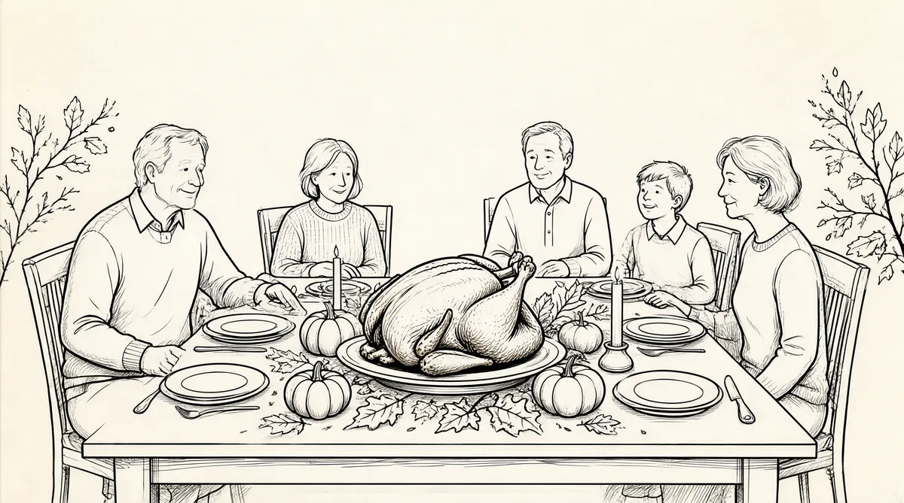

第42章 最高荣誉

1978年年初，在苏珊的鼓励下，阿斯特丽德·门克斯不时来法纳姆大街做饭、收拾屋子。苏珊给阿斯特丽德打电话为她鼓气，她说：“非常感谢你照顾他。”然而，渐渐地，随着沃伦开始接受苏珊不会再回到他身边这一事实，他和阿斯特丽德的关系也开始变得有些特别了。
开始，他和阿斯特丽德在她旧简易房社区的那个小地方幽会，到了5月，她搬到了他家里，并且放弃了她业余时间扮演奥马哈“波希米亚人”女主人公的公寓。那年夏天彼得从斯坦福大学回到家时，她在法纳姆的院子里种西红柿，并且到处搜寻30美分一加仑的百事可乐。“在过了那么多年之后，我从来没有想过这件事，”阿斯特丽德说，“但是它自然而然就发生了。”1
阿斯特丽德体面地从闹市区“消失了”，一个熟人这样说。2知道他们的关系后，巴菲特的朋友都大吃一惊。她比他小16岁，是一个蓝领妇女。然而，她却知道巴菲特所不知道的一切东西——高级烹饪术、美酒、吃贝类食物的刀叉以及厨师的刀具。和苏珊的消费习惯以及对时髦东西的偏爱完全不同，阿斯特丽德经常出没于旧货店淘一些便宜的旧东西。她很自豪能够以最少的钱买到一个二手的衣柜；她十分节俭，以至于使巴菲特看起来像一个败家子。和苏珊相比，她的家庭至上思想更重，她的兴趣——烹饪、园艺、淘便宜货——同苏珊不断膨胀和发展的品位相比，真是太微乎其微了。尽管阿斯特丽德很谦逊，但是她口才不好，也不是很聪明，这点同苏珊的风趣幽默和对他人的热切关心不同；阿斯特丽德十分务实的态度也同凯瑟琳·格雷厄姆无与伦比的贵族的高尚优雅相去甚远。
阿斯特丽德的出现在巴菲特的亲朋好友中引起了不小的骚动，这种不同寻常的三角关系违背了利拉的宗教信条和她的公共道德意识——当然她和儿子接触很少，对他几乎没有什么影响。彼得却认为他父亲只是要找一个伴侣，对此他已经学会了从容应对，因而他很少考虑这件事。豪伊则对此困惑不已，不知所措。对苏茜来说，这意味着要面对传统的继母问题：一个她和父亲之间的障碍，以及是否能够接受除了她母亲之外还有人能够对他更好的问题。对于格拉迪丝·凯泽来说——沃伦的首席保护者，帮他守卫办公室的大门，帮他接电话，以及处理他和苏珊的钱财——阿斯特丽德的到来意味着又增加了压力，这是她所不愿看到的。3
苏珊自己也很震惊，她从来没有想到事情会变成这样，她只是向她的丈夫强调他们都有自己的需要。在她的头脑里，沃伦对她的依赖是绝对的；他怎么还能和别人发生关系呢？但是这可能也是预料之中的事。沃伦一生都在寻找完美的戴茜·梅尔，并且无论他需要什么，阿斯特丽德就可以做到：购买百事可乐、清洗衣服、收拾屋子、帮他按摩头部、做饭、接电话、陪伴他做所有的事情。而阿斯特丽德从来都不告诉他去做什么，并且除了要和他在一起外，也不要他的任何回报。之前的戴茜·梅尔和苏珊之所以要逃离奥马哈，部分原因就是为了躲避生活中无穷的琐碎之事。随着苏珊不断调整自己，她开始接受这种关系，这也使她的新生活更为容易了。然而，苏珊天生就有一种占有欲。无论她怎么分散自己的注意力，她真的不希望失去沃伦对她的关注。因此，要根据苏珊的期望，而不是沃伦的期望来界定他们之间的角色。
巴菲特的生活在一定程度上又开始恢复了原样。但是他十分吃惊地发现了一个真理，这就是苏珊一直所坚持的：坐在屋子里挣钱不是生活的全部意义。他开始发现自己已经错过了哪些东西。尽管他对孩子们十分和蔼可亲，但是他真的不了解他们。有一个笑话讲得十分真切——“你是谁啊？”“是你的儿子。”4这就意味着在接下来的几十年中，他要尽力去修复他们之间的关系。但是很多伤害已经是无法弥补了。在47岁时，他才刚刚开始反思自己的损失。5
沃伦十分看重诚实，对于与阿斯特丽德同居一事他完全公开，一点儿也不遮遮掩掩。每个人都知道这件事（汤普森博士除外）。并且，苏珊和阿斯特丽德对此事也不做任何表态，只是说她们互相喜欢对方。沃伦对此事只公开评价过一次：“如果你对我们三个人都很了解，你就会看到这对我们都很好。”确实如此，至少没有什么比这更好的办法了。在这个意义上，这种情况同沃伦的偶像本杰明·格雷厄姆的生活有异曲同工之处。
在20世纪60年代中期，本杰明·格雷厄姆曾向妻子埃斯蒂提出了一个奇怪的协议，称他要同已故儿子牛顿的女朋友玛丽·路易丝一起生活半年，亲朋好友一般都叫她“马卢”，另外半年和埃斯蒂生活在一起。在本杰明看来，婚姻实际上是一个要不断被打破的概念，但埃斯蒂却不这样认为。自从她拒绝之后，格雷厄姆夫妇就开始分居，但是却从来没有离婚。本杰明和玛丽住在拉霍亚，有时会到法国普罗旺斯地区的艾克斯度假。埃斯蒂住在比弗利山庄，本杰明感觉这种生活对她而言不错，而玛丽对没有婚姻的同居生活也很满意。6
本杰明·格雷厄姆仅仅在名义上成功地维持了两种关系，然而，巴菲特却不想效仿他。巴菲特不想要两个妻子；对他来说，要解释这种关系还真是不容易。很久以后他这样分析：“苏珊把我组成了一个整体，而阿斯特丽德则使我保存了这个整体。她们都需要给予，而我是一个伟大的接受者，因此，对她们都不错。”7但是，问题没有结束，因为像这样的解释，以及称这种安排对他们都很合适的说法，忽略了三角恋中最根本的问题：如果用天平来称量她们两人的重量时，肯定不会平衡。
这个三角关系的不平衡被扩大了，因为实际上这要涉及两个三角关系——不过只有一个人明白这一点。沃伦，出于无知，认为苏珊受到了亏待。因此他竭尽全力去弥补她——在私下里安抚，在公开场合尽心尽责地关爱，然而这却把阿斯特丽德推到了尴尬之中，使她陷入了受人斥责的地步。同样出于无知，阿斯特丽德——十分钦佩，甚至是崇拜苏珊——也接受了沃伦不会和她结婚的现实，把奥马哈之外所有的社会和商业活动全都让给了苏珊，十分不高兴地接受了巴菲特的女管家和情人的角色，这样他和苏珊的婚姻就好像没有什么裂痕。巴菲特这样解释：“阿斯特丽德知道她在哪些方面很适合我，她知道我很需要她，因此，这样也还不错。”阿斯特丽德的角色尽管不是十分明确，不过这种生活也确实给了她所一直缺乏的安全感。
对苏珊来说，这样做既维持了自己作为沃伦·巴菲特夫人的荣耀，同时又可以完全跳出这个角色，去寻求自己所追寻的生活，生活似乎只是表面上发生了改变。然而，在沃伦看来，他好像是从这两个世界中都得到了最好的部分，尽管这种新的关系并没有弥补他的损失。有些人会得到这种印象，苏珊之所以要搬出去，是因为他同凯瑟琳·格雷厄姆的关系暧昧或者——有些人搞错了对象和时间——他同阿斯特丽德的关系，对此，他不能为自己辩护。
他拼命想使剩下的部分保持完整无缺，并且竭力要在苏珊的余生去弥补他曾经给她造成的失望。但是，这当然不能改变“他是谁”这一事实，并且很明显，这也不是说他就不会再和凯瑟琳见面。巴菲特邀请格雷厄姆来奥马哈参观战略空军司令部，可能也是为了借机把阿斯特丽德介绍给她。格雷厄姆带着她最好的朋友梅格·格林菲尔德一块儿来了，她是《华盛顿邮报》社论版编辑。格雷厄姆在人际交往方面极少见的一个弱点——当四周挤满了男人时，她通常没法和其他女人处得很好。8对此，格雷厄姆并不否认。但对她梅格是个例外。同引人注目的女人见面时，巴菲特说：“凯瑟琳的第一想法是如何把她从屋里子轰出去。”
巴菲特带他们和斯坦·利普西到奥马哈俱乐部吃饭。凯瑟琳兴高采烈地同沃伦交谈着，梅格和斯坦偶尔插上一两句话，而阿斯特丽德被晾在了一边，独自吃饭，因为她不是那种喜欢主动出击的人，除了点菜之外，她整顿饭都没有再说一句话。巴菲特总是被格雷厄姆迷住，因此也没有帮她解围。旁边还有几十个人，围着一张大桌子，在乱哄哄地庆祝生日。最后，那些人站起来，围成一圈，开始大声欢呼，并伸出双手当作翅膀，随着音乐的节奏摇摇摆摆，像小鸡一样跳舞。作为一直都是一个讲究礼仪的女士，格雷厄姆坐在那里，眼睛发直，脸上露出难得一见的表情。9
从那以后，巴菲特几乎总是在奥马哈以外见格雷厄姆。当她给沃伦家打电话时，如果是阿斯特丽德接了电话，凯瑟琳就会一言不发10，好像阿斯特丽德不存在一样，只有一次例外，那是为了问如何用她的摄像机。11
苏珊和阿斯特丽德地位完全不同；她们彼此都感觉十分满意，阿斯特丽德甚至还去过旧金山看望苏珊。苏珊在贵族山的简陋小公寓现在看起来像一个小姑娘的闺房一样，里面堆满了布娃娃和枕头，贴满了海豹的照片，甚至还有一部米老鼠造型的电话。她把厨房的壁柜当作衣柜来存放衣服。12
现在苏珊十分感激阿斯特丽德，因为后者让苏珊的生活更为轻松，只要阿斯特丽德接受苏珊为她界定的“有限的公开露面角色”就行。搬到旧金山对苏珊而言曾经是一件十分困难的事情，因为她必须把许多朋友和她所关心的事业抛诸脑后。她的离去引起了剧烈的骚动。未来中央委员会、计划生育协会、城市联盟以及其他的民权机构都要重新改编，并且都感觉他们的核心缺了一大块。她的朋友和追随者也要在心态上做出不同的调整，他们有些感觉被遗弃了，有些只是很怀念她，有些还不断到旧金山去看望她，在某种程度上把那里当作了第二个家。有几个人甚至跟着她到了旧金山，并在那里定居下来。13
苏珊对巴菲特父母的许多朋友解释说她之所以要搬到旧金山去，是因为那里为她提供了更为多姿多彩的生活，在那里她可以徜徉于美术馆里，徘徊在爵士乐俱乐部内，沉浸在交响乐中。但是到了20世纪70年代末期，旧金山不再是美国的巴黎了。大量退伍的老兵涌入旧金山湾区的海滨，许多人在身体、精神和心理上都有问题。人行道成了藏污纳垢的地方，在海特，在吸食迷幻药和大麻以及裸泳的嬉皮士们之后，酒鬼、吸毒犯们接踵而至。那些人之所以被吸引到旧金山，是因为这里盛行享乐主义，性自由和性解放观念日益在街上无家可归的人中间蔓延。在过去的10年里，同性恋从最初的地下状态开始逐渐走向公开化，并且在1976年达到了高潮。这一年为了庆祝获得自由，他们在金门公园举行了“同志光荣游行”。但是一个佛罗里达州的歌手安尼塔·布莱恩特开始了一场全国性的打压同性恋的运动，1978年11月，旧金山的市长乔治·莫斯孔尼和市督察员哈维·米尔克被一名被市政府辞退的同性恋公务员所刺杀，刺杀行为标志着该项运动的高潮。14陪审团接受了刺客的精神失常辩护，并且裁定为“过失杀人罪”，之后旧金山爆发了有史以来最严重的骚动。
在苏珊新结交的第一批朋友中，就有一对同性恋，其中一个人以前是个麻醉医师，后来由于一次医疗事故而离开了奥马哈。她还结交了其他的新朋友——音乐家、画家，以及在商店、教堂、美容店、剧院以及大苏尔的伊沙兰学院认识的各种各样的人。很快她的身边就又聚集了一大群人，有许多都是同性恋。苏珊的叛逆性格在旧金山振奋人心的氛围中活跃起来，并且她的新生活也把她解放了出来。原来乐善好施的女主人现在投身到了各种各样的聚会中，感觉就像是在爵士音乐会的后台一样；她打开了自己的大门，被邀请参加各种嘉年华活动。但是，同以往一样，她也找到了一个事业——她又一次违反了惯例——当她在施舍处工作时，她成了许多同性恋朋友默认的母亲，因为好多人从来都没有享受过母爱。
沃伦只能通过金钱来控制她的生活。她还持有许多伯克希尔的股票，但是按照他们的约定，她一股都不能卖掉。她喜欢上了马克·夏卡尔的一幅画，想买回来挂到自己的小公寓里，但是她告诉一个朋友说她不能这样做。“这会毁了一切的。”她说。沃伦十分清楚地告诉她：“我不想让你卖掉伯克希尔的股份。”他仍然负担着她所有的开支。格拉迪丝监控着她的花销，并且替她支付所有的账单。
同样，苏珊也是通过沃伦才借给了朋友查尔斯·华盛顿24900美元。他是奥马哈的一位活动家，是她的一位忠实的捍卫者，也曾经是苏珊的坚定支持者之一，记者阿尔·佩格尔在撰写《是什么使苏珊·巴菲特歌唱？》一文时采访过他。巴菲特认为借钱是最为糟糕的想法，如果他不是十分渴望取悦他的妻子，他可能不会同意。果然，在几个月后，华盛顿没有按时支付几笔还款。很少有什么事情会让巴菲特暴跳如雷，但是如果他感觉有人在骗他的钱，他的双眼会闪现出痛苦和愤怒，并且会立即报复的。转瞬之间，最多也就几秒后，他的情绪平静下来，同时他也开始考虑有条不紊地做出反应。这一次，他立即到法院起诉华盛顿，并且赢得了24450美元的判决。
“华盛顿事件”象征了沃伦和苏珊的新关系：如果苏珊保留着她所有的股票，他对支票簿的控制就会松一些。除了替她支付账单外，沃伦还给她额外的零用钱：这是她捐赠的预算。当孩子们需要时，她会给他们补贴一些，而沃伦是不会这么做的。为了给自己和玛西娅建造一座树屋居住，豪伊已经把他持有的伯克希尔的股份卖掉了一些。他们一边在努力维持自己的婚姻，一边在为生计奋斗。“这真是太可怕了，沃伦不出钱帮他们买房，”苏珊抱怨道，“他是打算让屋顶塌下来，他想让他们失去房子。”但是这是游戏的一部分。沃伦知道苏珊会为他们想办法的，因为当苏茜的婚姻出现问题时，她也照顾过她，她总是会照顾一切的。
除了钱以外，赚钱是沃伦的工作。当家里的财富正在减少时，所有这些变化和错综复杂的事情，以及成堆的账单全都同时挤在一起出现了。当苏珊要搬到旧金山时，沃伦又被拖到了纽约州布法罗的法庭，来应对两家报纸之间耗资巨大的斗争。通常遇到这种情况，他都会卷起衣袖，大干一场，并且很喜欢这样的斗争。但是现在，由于他面临着个人的危机，这就变成了一个昂贵而且非常有趣的小插曲，帮他排除了其他的烦扰，并缓解了痛苦。《布法罗晚报》事件将是一场旷日持久的战斗，它曾经威胁到蓝筹印花公司的价值，是他职业生涯中最不愉快的经历。这和他许多年前所应付的比阿特利斯的冲突十分相似，他曾经发誓永远不要再重复这样的事情。
1977年的春天，在经过多年的搜寻之后，他和芒格最终买下了这份日报。3550万美元的开价是他们有史以来最大的并购交易。15布法罗这座钢铁城市陈旧阴冷，满是铁锈，而且不是他们所梦想的只有一家报纸的城市，不过，在这里能够拥有一份报纸仍然不失为一个不错的选择。布法罗的工人清晨很早就到工厂上班，要到晚上下班后才有时间看报。《布法罗晚报》实际上已经占有了整个市场，把它的竞争对手《信使快报》远远地甩在了后面，该报的经营十分惨淡。巴菲特在新闻报纸行业已经形成了一套十分有说服力的竞争理论。
凯瑟琳总是说竞争使它们办得更好之类的话。我说：“看，经济形势不可避免地导致每个城市只能有一家报纸。我把这称为‘胖者生存法则’，并且你会获胜。没有第二的位置，也没有仁慈的救援团。最后，不会有任何竞争，因为它不是这么运作的。”
《信使快报》的员工和发行人也清楚在新闻报业没有仁慈的竞争者。1920年，全美国有700座城市拥有两家报纸；到1977年，剩下不到50座了。在平时，《布法罗晚报》的销量是《信使快报》的两倍，《信使快报》只能通过周末版勉强生存下去，这构成了它收入的60%。
《布法罗晚报》最初是打算卖给《华盛顿邮报》的，但是被拒绝了。凯瑟琳·格雷厄姆不愿意再接受一家工会力量强大的报纸。巴菲特倒不害怕这一点。“在我们买进之前，我们同那些工会领导者坐下来谈了谈，‘听着，我们可能犯各种各样的错误，但是在这个有两份报纸的城市，只有一件事情能够毁掉报纸，那就是无期限的罢工。你们完全有能力对我们这样做，但是如果你们做了，要知道，我们会两败俱伤的。这是一个不值得去尝试的冒险，并且我们希望你们能够理解，我们也在进行冒险。尽管你们握着牌，但是如果你们打出来了，我们都会失败的。’”那些工会的人似乎理解了他所说的话。
巴菲特和芒格的企业帝国现在的价值已经超过了5亿美元，16他们控制着伯克希尔近一半以上的股份，以及蓝筹印花公司65%的股份。这两个公司还拥有国民赔偿公司、罗克福德银行、喜诗糖果、韦斯科金融公司、《华盛顿邮报》10%的股份、皮克顿侦探公司25%的股份、GEICO15%的股份以及许多其他公司的股票——最后，还包括他们长时间搜寻后获得的都市报。17
《布法罗晚报》的执行主编默里·莱特迅速同巴菲特讨论了创办周末版的计划，该报先前的主人，傲慢的贵妇人凯特·罗宾逊·巴特勒一点儿也不喜欢这个计划。已故的巴特勒夫人是一个娇小可爱但十分专横的人，她顶着一头蓬松的白发，常常对雇员发火。她握着拳头敲打着从法国进口的皮革面的桌子，因为她看不出来为什么需要增加版面。18她住在布法罗一座主要的标志性建筑里，这是一座富丽堂皇的大厦，每天她开着那辆黑色的劳斯莱斯豪华汽车，穿过几个街区来上班。据说，她对新闻从来都不感兴趣，她更喜欢到欧洲去旅行，寻找能够配得上她女儿的王公贵族们19。
《布法罗晚报》的发行人亨利·恩本同巴特勒夫人的关系很好，他主要的工作是让她镇定下来，因为在许多时候她会对报纸的社论持反对意见。巴特勒夫人关注的焦点不是赢利，而恩本也是如此。“你找不到比亨利·恩本更好的人了，但是他的头脑里从来没有想过和新闻纸的生产商谈判。我一到那里，新闻纸的生产商就问道，巴菲特先生喜欢钓鱼吗？我告诉他们，哦，查理喜欢钓鱼，不过是我来买新闻纸。”仅仅因为穿过加拿大的一座桥，《布法罗晚报》要比其他报纸多付10%的费用，在佛罗里达州、加利福尼亚州和达拉斯市也是如此。巴菲特想把每吨运输费用降低30美元。“我们每年要买4万多吨，因此每吨降低30美元，总计就是120万美元，而整个公司还挣不到这么多钱呢。”他把新闻纸的生产商巴菲特化了。“我告诉了所有7个商家，我们以不合适的价格和你们签订了不同期限的合同。你们必须对我们和其他美国的客户一样，收取最低的运输费用，你们要给我们同样的报价。我们会遵守那些合同的，但是如果你们不和他们谈判的话，你们就再也别想和我们签新闻纸合同了。”最后，他赢了。
但是仅仅通过降低运输费用并不能扭转《布法罗晚报》的亏损局面。布法罗的两份报纸是一种奇怪的平衡态势。一份控制着工作日市场，另一份却控制着周末市场。20巴菲特和芒格同意了默里·莱特的计划，《布法罗晚报》别无选择，只能把工作日的优势扩大到周末。21“如果我们要进行有效竞争的话，我们就必须按以前的办法来，”芒格说，“拼个你死我活。”
在《布法罗晚报》即将出版周日版的两周之前，《信使快报》发起了一场出其不意的攻击，控告《布法罗晚报》违反了《反托拉斯法》。他们声称《布法罗晚报》计划免费发放5周的周日版，然后以折扣价出售，这就相当于非法垄断，目的是为了让他们破产停刊。22《信使快报》的律师弗雷德里克·福斯向巴菲特发起了巧妙的进攻，给他设置了种种圈套，想让人们把他看成一个毫无仁慈之心的垄断者，说他要把当地所有的竞争对手都赶出城去。
福斯提出了大量的问题，表明巴菲特和芒格都很清楚，激烈的竞争会削弱《信使快报》的实力。《信使快报》发起了一场全面的公关战，在头版连续报道，详细而充分地刊登内幕消息，连续几周每天追踪报道，把自己描述成为了捍卫自己的生存权而与残暴的歌利亚英勇斗争的小邻居大卫。这种报道在布法罗很受欢迎，因为这个城市曾经拥有令人引以为豪的就业率，而现在到处都是失业的工人，工作机会就像铁锈一样不断剥落。
巴菲特刚刚从韦斯科金融公司事件的困扰中解脱出来，现在又被卷进了另一场痛苦的法律纠纷之中，这次还需要他亲自到布法罗去，到现场接受冷酷、充满敌意的询问。
《布法罗晚报》开始吸干蓝筹印花公司的保险柜了。巴菲特的律师查克·里克肖塞尔现在已经离开了芒格–托尔斯律师事务所，成了太平洋海岸交易所的总裁。他的继任者罗恩·奥尔森来到了布法罗，为巴菲特作为公司清算人垄断者的控诉作辩护，同时芒格也从洛杉矶召集了一群人来协助处理该案。奥尔森提交了一份正式的陈述，声称他的代理人从小就十分钟爱报业，并且强调了他在《奥马哈太阳报》荣获普利策奖中所作的贡献。同时，《信使快报》刊登了一系列的人物报道，竭尽全力去讨好那些可能会参与审判的每一位法官。23审判结果表明他们还是失败了，虽然如此，纽约南部地区联邦法庭的查尔斯·布里安特法官的判决还是对《信使快报》有利。巴菲特总是十分自豪，因为他仅仅凭借资产负债表就能迅速评估一个公司。巴菲特第一次在布法罗的法庭出庭时，《信使快报》的律师福斯把他描述成了一个对《布法罗晚报》知之甚少的人，认为他没有到工厂实地考察过，也没有找专业的分析师研究该报，就贸然买下。福斯指控巴菲特事先考虑过《布法罗晚报》出版周日版是否能将《信使快报》挤垮的问题，但是巴菲特否认了这一点。福斯走向法官席，手中挥舞着一份《华尔街日报》，上面有一篇关于巴菲特的文章——这是第一次，他尝到因出名而带来的恶果，他的声誉成了反对他的武器。24巴菲特曾经告诉记者，如果可以从财务管理中解脱出来他会十分高兴，但是，实际上，随着他的新形象的增大，他的自我意识比以前更危险了。这篇报道中引用了他的朋友桑迪·戈特斯曼的一句话：“沃伦喜欢拥有一家具有垄断地位或者在市场占据主导的报纸，就像拥有一座不受约束的桥梁收费站一样，你可以随心所欲地抬高收费，想抬多高就定多高。”25
“你这样说过吗？”福斯在法庭上问他。
“没有，”巴菲特回答道，“我记不清是否讲过像桥梁收费站之类的比喻，只是说这是笔好生意。也许在内布拉斯加州的弗里蒙特比桥梁收费站还要好。我认识许多诚实的人，但是当他们开始引用别人的话时，他们就不一定了……”
福斯继续追问：“你相信还是不相信呢？”
我不想和你争辩……我倒是想拥有一家……我只是说过在通货膨胀十分严重的情况下，如果没有什么约束，能有一座桥梁收费站也是很不错的。
“为什么？”福斯问道。
巴菲特看看法官，他在尽力给他讲经济学。“因为你已经投入了资金，你用过去已经不太值钱的钱来建桥，而且再加上通货膨胀，你也不用担心要更换桥梁——你只用建造一次。”
“你说‘没有什么约束’，意思是你可以随心所欲地提高收费，对吗？”
“没错。”26
巴菲特现在要用自己编织的网来左右陪审团的意见。一座收费桥梁，横跨密西西比河的道格拉斯大街的桥梁，实际上这是他少年时的一个着迷的问题。27在巴菲特小的时候，奥马哈花了十多年的时间同一位收费者斗争，要把唯一通往艾奥瓦的大路解放出来。他和芒格后来试图购买底特律国际桥梁公司，该公司拥有连接底特律与温莎横跨安大略湖的一座大桥，最终他们只买到了该公司24%的股份。28
“这是一座天使之桥，有1000平方英尺，并且能挣到很多的钱……当我们无法得到它时我十分失望。不过查理不断告诉我，我们没有得到它是多么的幸运，因为，他说，想象一下，一个家伙站在收费大桥上不断涨价，还有什么比这更糟糕的？”
确实如此。
“法官不喜欢我，由于种种原因，他就是不喜欢我。他也不喜欢我们的律师。许多人都喜欢罗恩·奥尔森，但是法官却不喜欢他。”
1977年11月，法官布里安特公布了初步的裁决，裁定《布法罗晚报》完全有权出版周日版，这样做符合公众的利益。但是很明显，布里安特受到了福斯关于收费大桥证词的影响，在裁决时，他也考虑到了这个比喻，惋惜地说“布法罗城的读者和广告商们可能会得出这样的结论：他们知道如何应付唯一的一家报纸，作为他们通往外部世界不受约束的收费大桥。”29他认为《布法罗晚报》的计划具有掠夺性，并严格限制了它周日版的促销、营销和发行活动。法官禁止《布法罗晚报》发放免费报纸，打折销售，对广告商也做出了严格的限制。他的裁定中有一条十分棘手，要求每个订户每周都要填一张表格来订阅《布法罗晚报》的周日版。《信使快报》刊登了大篇预先准备好的报道，吹嘘自己的胜利，炫耀着自己战胜了一个外来的恶霸，这个恶霸想把当地的小本经营者赶尽杀绝。《布法罗晚报》对此没有作任何回应。
现在我们到了生死攸关的地步了，我们碰上了一个不喜欢我们的法官，我们只能在困境中携手应战。
《信使快报》的雇员开始监督执行命令，并且发现《布法罗晚报》在发行周日版时有些订户没有填表。布里安特法官判定《布法罗晚报》蔑视法庭。
广告商都跑去支持《信使快报》，5周后，《布法罗晚报》周日版的广告只有《信使快报》的1/4。30突然间，《布法罗晚报》从微薄赢利到亏损140万美元。31获悉此事后巴菲特不由自主地打了个冷战，他从商以来还从来没有以这种速度损失过这么多钱。
1977年圣诞节前一周的某一天，天空阴沉着，好像要下雨一样，布里安特法官宣布开庭，拉开了审判的序幕，以决定最终的判决条款。当年的深秋，巴菲特在彻夜难眠和泪流满面中思考着苏珊离去的变故，虽然她并没有完全离开他。为了分散注意力，从个人痛苦中解脱出来，他像一个金甲虫一样围绕着卡罗尔·卢米斯、阿斯特丽德和凯瑟琳·格雷厄姆，在纽约、奥马哈和华盛顿之间飞来飞去，当然，他并不希望这样来散心。当法庭休庭时，他像往常一样飞回翡翠湾度假，不过今年是在和苏珊达成新协议后全家第一次一起过节，在这期间，苏珊再一次向他保证他们的生活和以前没什么两样。巴菲特家的新年聚会一结束，沃伦和苏珊又各奔东西了。布里安特法官也重新召集诉讼当事人开庭审判，奥尔森和芒格不断给巴菲特打电话，给他通报审判工作的最新进展，因为他回到奥马哈工作去了。
1978年7月，他正和卡罗尔和乔治·吉莱斯皮在一起，“我们正在纽约凯瑟琳的家中同查理打桥牌，正在那时布里安特法官的审判结果传来了。我把它给了查理，让他读一读，他说，‘嘿，文笔不错啊。’我快要疯了，我才不管它文笔是好是坏，我要接受并忍受所有这些限制，根本没有心情去欣赏什么文笔。”
安特法官布里的最终判决就文笔而言是一篇毫无陈腐之气的杰作，副标题是这样的——“巴菲特先生来到了布法罗”，布里安特对《布法罗晚报》规定了严格的限制条款，芒格和奥尔森计划上诉。而巴菲特却不想再同法官斗争下去。芒格总是开巴菲特的玩笑，称他的管理方式是从一个公司取出所有的现金，然后提高价格。如果失败了，巴菲特的箭筒里就没有一支箭了。这种方式无法解决《布法罗晚报》的问题。巴菲特被击垮了，他根本不想再和法官对峙了，他宁愿让3550万美元打水漂。他上次面临的最大的法律纠纷刚刚才算结束：美国证券交易委员会经过漫长的考虑，终于同意了伯克希尔和多元零售公司的合并交易。巴菲特迫切希望和律师了结一切，不再宣誓做证、接受传讯以及跟法官斗法。“我不想上诉，我只是感觉到这会是一场旷日持久的战斗，并且还会激怒法官，一旦激怒了他，他就会强制我们执行禁令，我们的损失就会更大，而《信使快报》就会立即发起猛烈的攻击，那样只会不断地扩大它的影响。我声称，我们不去上诉，因为过个一年半载我们无论如何都会失败停刊的。而罗恩和查理告诉我，我错了，而我也确实错了。”
最后，他决定同他们一起上诉。“我们必须上诉，我们不能屈服于这些条件，这会让我们失去竞争优势。因此，从根本上来说，我别无选择。我们没有虚张声势，不管怎么说，那不是我的风格。在一个人的一生中，你可以通过虚张声势获得声誉，相反你不虚张声势也能获得声誉。因此，我想让别人明白我不会等着被宰割。”
《布法罗晚报》是巴菲特单独做出的最大的投资，他留出了充足的回旋余地。它占用了蓝筹印花公司近1/3的资金，在布里安特法官的限制下，它一直在亏损，并且很容易受到罢工的打击，这会进一步削弱它的实力，因为当时的股票市场行情正在下跌，巴菲特急需大量的现金来购买他所一直钟爱的价值低位股。并且《布法罗晚报》潜在的失败不仅仅威胁到了他和芒格3500多万美元的投资；他是个连花费31500美元买一套房子居住都舍不得的人，因为他认为这些钱最终会变成100万，因此，他们在报纸行业投资的损失会使局势比表面上看起来更加严峻。因此，巴菲特不仅做出了上诉的决定，同时他也打算让斯坦·利普西助他一臂之力，当时利普西正在考虑着搬到旧金山去，而巴菲特却想让他来解救这份报纸。“你去布法罗怎么样？”巴菲特问道。“我的心一沉，”利普西说，“但是在任何事情上我都不想让沃伦失望。”
利普西最后去了布法罗，临时先帮帮忙，他是在布法罗多年不遇的暴风雪之后去那里的，路边堆的积雪都快要和屋顶一样高了。他在巴菲特推荐的一家酒店住下，在巴菲特最喜欢的牛排店吃饭——他一直十分疑惑巴菲特怎么能忍受得了这里呢。第二天早上，当他一到《布法罗晚报》的办公室，他就立即明白巴菲特为什么要派他来了。他们的新闻做得很好，但是管理很混乱。他在一张秘书的办公桌旁坐下，开始在人工打字机上工作。一位经理来到了他的身边，问道：“您想要什么酒？”利普西问他是什么意思。那个人说：“哦，作为一个经理，您有资格得到两箱酒”。32
利普西开始每个月在布法罗工作一周。有一次在奥马哈时，他同沃伦和阿斯特丽德一起去感受了一下沃伦现在的生活氛围。沃伦对这一新关系感到十分轻松，他让阿斯特丽德带他们所有人去看男扮女装的表演。33
到1979年时，利普西已经把报纸的管理工作扭转过来，他们同《信使快报》法律诉讼的战斗也快要接近胜利了。1979年4月，在布里安特初审裁决近一年半后，联邦第二巡回上诉法庭一致同意推翻他的裁决，称他的观点“受到了法律和事实错误的影响”。“没有明确的证据表明巴菲特先生购买《布法罗晚报》就是为了挤垮《信使快报》……《布法罗晚报》并没有采取不正当的竞争手段来挤占《信使快报》独占的周日报业市场，而是给市场带来了更多的竞争。所有的证据只能表明巴菲特先生只是想尽可能地办好《布法罗晚报》，而并没有想过他的竞争会给《信使快报》带来什么严重的后果……法官们必须警惕原告利用《反托拉斯法》来保护自己，免受竞争的影响。”34
虽然《布法罗晚报》获得了胜利，布里安特法官的禁令被撤销，但是这有些太晚了。《信使快报》立即对此提出上诉，寻求维持原判。《布法罗晚报》的律师疲倦地举起他们的利剑，继续这场荒谬的战斗。同时，尽管利普西加强了对报纸的管理，这场官司已经给他们造成了巨大的损害，不仅仅是诉讼费的开支，还包括因为法官的禁令而导致《布法罗晚报》损失的大量广告费。据保守估计，两年里它损失了好几百万——1979年的税前损失高达500万美元，这是巴菲特和芒格所经历过的任何经营活动中损失的几倍。他们要付出艰苦的努力才能把这些钱赚回来。
“搬到布法罗去怎么样？”巴菲特问利普西。“我不想那么做。”利普西回答道。巴菲特什么也不说了，利普西继续在两头奔波。
到1979年年底，股票市场沉浸在一片黑暗之中，巴菲特说，股票订单“就像挤眼药水”。35道琼斯指数萎靡不振已经近10年了，它好像一辆破车，冒着黑烟，喘着粗气，吃力地颠簸前行，最近刚刚跌回到了800多点。杰拉尔德·福特入主华盛顿，接着又是吉米·卡特，他穿着罗杰斯先生牌的毛衣，通过了节约能源的议案，最后却事与愿违；并且他对伊朗的外交似乎也无能为力，导致美国的彻底失败，伊朗国王也被阿亚图拉·霍梅尼赶下台，王后再也不能在伊朗使馆的舞厅跳华尔兹了。三哩岛核电站反应堆核心部分熔毁导致放射性物质泄漏；通货膨胀率达到两位数；加油站前排起长队。《商业周刊》宣称这是“股市之死”，好像没有人再会购买股票了。极度悲观的情绪笼罩着整个国家。
投资者们蜂拥着积蓄黄金、钻石、铂金、艺术品、房产、稀有金币、矿业股票、饲养场的家畜和石油；“现金是垃圾”是当时的流行口号。高中女生戴着由南非克鲁格金币制成的项链。在格林奈尔学院，一个自以为是的新受托人史蒂夫·乔布斯——备受尊敬的鲍勃·诺伊斯的门徒——竭力劝说投资委员会卖掉所有的股票，买进黄金。36二十五六岁的乔布斯是位精明的工程师，很显然也是一位聪明的家伙，但是投资委员会犹豫不决，最后，格林奈尔没有购买黄金。
巴菲特的观点正好相反，他在《福布斯》发表文章：这是投资者购买股票的最佳时机。“未来的事永远没有人知道，”他写道，“但是当大家都看好股市的时候你再入市，就不得不出高价了。那些着眼于长远的投资者一直要学着如何与不确定性周旋。”37他也是一位着眼于长远价值的投资者——不过，他没有现金。从10年前以来，巴菲特不断地获得大批现金——先是从分配合伙公司的资产中获得了1600万美元，接着从一家私人投资的数据文件公司的股票买卖中获利数百万美元，但是这些全都投入到了伯克希尔–哈撒韦的股票上。巴菲特想要资金来投资，他的年薪只有5万美元，现在也只是增加到了区区10万美元，他又一次开始从银行借钱投资。
最后，斯坦·利普西终于答应搬家了，这是沃伦一直所希望的。1980年的一天，利普西从没有上锁的后门进入了沃伦的办公室，他告诉沃伦他的妻子珍妮想和他离婚，并且斯坦认为她的律师要来闹事。巴菲特用汤姆·墨菲曾经传授给他的经验来提醒利普西。“你明天就可以让他们滚蛋，斯坦。”他说。他邀请对方的律师来到他的办公室，帮着调停朋友们间的离婚案——这是他第二次这么做了。不久之前，巴菲特还成功地促成埃德·安德森和他妻子雪莉·史密斯·安德森的和解，她也是沃伦和苏珊的老朋友。在帮助朋友缓解矛盾、渡过难关方面，他很有经验。他开始告诉利普西他的生活需要改变。斯坦认为，是该改变的时候了。随着谈话的深入，巴菲特引导着利普西自己提出搬到布法罗去。“这是典型的沃伦方式，他十分想让我自己提出来。”但是最后，就像人们投资合伙公司一样，这也成了利普西自己的想法。
利普西搬到了布法罗，在那里定居下来。每周五的晚上，他就给巴菲特打电话，告诉他最新的“可怕的数字”，但是每一次，无论消息多么令人失望，巴菲特都很乐观，还感谢利普西给他打电话。“这有点儿令人鼓舞。”利普西说。38到1980年时，损失已经增加到了1000万美元。芒格在蓝筹印花公司的年度报告中警告了这种危险状况，同时也生气地抱怨了工会要求“大幅度提高福利待遇的要求”。芒格在1978年的报告中已经提到，这是他第二次提及：“如果《布法罗晚报》再发生罢工导致停刊的话，那就很有可能会被迫停业并进行破产清算。”39
芒格所写的这些话，以及他通过主导《布法罗晚报》的法律诉讼来掌控蓝筹印花公司的努力，都无法挽救他恶劣的健康状况。多年来，他一直在坚强地忍受着日益恶化的白内障的折磨，最后他的视力受到严重损伤，不得不进行手术。他的左眼在接受白内障手术时，引发了一种极其罕见的并发症——上眼皮内缩。一种生长在眼球外面的特殊的初生体组织（可能是角膜细胞）进入了他的眼球中，并且开始像癌细胞一样生长。对视神经产生的压力和破坏引发了严重的疼痛，他几近失明。40当他无法忍受眼睛缓慢而猛烈发作的痛苦时，芒格安排医生给自己做了眼球切除手术，然后安了一只玻璃义眼。但是后来，“我就像一只受伤多日的动物一样”。41即使在护士的辅助下，他都无法站着洗澡，因为剧烈的疼痛会导致他眩晕。他告诉巴菲特他不想活了。他十分害怕再经受一次这样的折磨，同时也可能面临失明的威胁，他决定不再对右眼的白内障做切除手术了，只采取保守治疗，不再切除晶状体了。因此，他只好戴着一副老式、像水母一样厚的白内障眼镜，把它挂在他的“好”眼上。
在芒格忍受痛苦之时，《布法罗晚报》的汽车工人工会打算试试深浅——管理方在胁迫之下管理该报已经三年了，也许他们是受到了鼓励——他们要求在不工作时也要拿加班费。《布法罗晚报》曾经在一份临时的协议中同意支付这份钱；现在工会想让它成为一个永久的合同。芒格和巴菲特断然拒绝了。接着在1980年12月，卡车司机们认为巴菲特不敢在与《信使快报》斗争的紧要关头铤而走险。谈判持续了一夜，最后还是失败了，早上6点钟，司机们开始罢工。在其他工会的帮助下，利普西、亨利·恩本和默里·莱特穿过罢工者的纠察线，勉强印出了报纸。然而，在最后一刻，印刷工人们停止了工作，拿走了印版，工作只好停顿下来。
巴菲特急得像热锅上的蚂蚁一样。他有着十多年的报业发行经历，他知道即使没有印刷工人参与罢工，仅仅汽车工人工会——总共才只有38名成员——也有能力让报纸停刊。其他的工会和志愿者可以操纵印刷机，但是如果没有了司机来运送报纸，那报社很快就会垮台。考虑到安全问题，巴菲特不能使用非工会的人员来替代他们。“我不打算在寒冷的12月派我们的人摸黑到一些乡村地区送报，有些家伙可能会在那里用铁棒袭击他们。我坐在奥马哈的办公室里，想派一群人去把这些家伙给痛打一顿，当然这并不是个好办法。”他说。
《布法罗晚报》差点儿关门大吉。
巴菲特告诉这些工会，报纸“已经只剩有限的‘几滴血’了，如果它失血过多的话，就没法再生存了……只有看到切实可行的前景，我们才会起死回生。”42这一转折点很快就会来临。43
这一次，工会都害怕了。在48小时之内，《布法罗晚报》又出现在了大街小巷。到那时为止，《布法罗晚报》的周日版尽管已经取得了一些进展，但是仍然同《信使快报》存在差距，不过它正在慢慢地朝着主导地位前进，同时还保持着自己工作日版的优势。44到1981年年底的时候，利普西和巴菲特已经把当年的损失减少到了150万美元，是《信使快报》的一半。45在一场“胖者生存”的战斗中，它几乎已经获胜了——尽管付出了巨大的代价。《信使快报》一直都没有放弃法律诉讼，它仍然想维护布里安特法官的裁决，但是它的主人，看到了另一位法官——市场的裁决，市场正在授予《布法罗晚报》最高的荣誉。《信使快报》现在意欲售给传媒大亨鲁珀特·默多克，但是工会不同意他减薪的要求。紧接着，在1982年9月，《信使快报》只得停刊。
《布法罗晚报》立即更名为《布法罗新闻报》，并且开始发行《晨报》。胜利在望了，巴菲特和芒格在希尔顿举行了一次报社中层领导的会议。会上有人提出分享胜利的果实，但是巴菲特却说“三层——编辑和记者们工作的地方——的员工都无法为公司增加利润做出什么贡献”。资金承担了风险，因而才能收获回报。他和芒格在一系列的决定中投下了3500万美元的赌注，那时他们可能输得一干二净，因此所有的利润都应该归他们所有。他认为，员工所付出的时间和辛劳已经得到了恰当的回报——不多也不少，正合适。员工在经历了风风雨雨后，却受到了他无情的对待，这出乎人们意料。
当巴菲特和芒格离开办公室时，他们要从出版人亨利·恩本的身边经过，而亨利“还以为他起码会受到小小的嘉奖”，罗恩·奥尔森说。但是芒格常常在别人还在说话时就自顾自地钻进汽车里，好像根本就没有听见他们说话一样，并且常常一讲完就径直从门口出去，根本不等别人反应过来。这一次，亨利张着嘴刚要说话，芒格就走了，把他晾在了那里。没有人说感谢的话。奥尔森只好跟着他们，在屋子里到处跟人握手，竭力去打圆场。46
一年后，随着广告的增多以及发行量的激增，《布法罗新闻报》的税前利润高达1900万美元，超过了前几年所有的损失。其中有一半归巴菲特所有。随着报社日趋走上正轨，他的注意力也逐渐减弱了。不过他在每年的年报中仍然会大加称赞《布法罗新闻报》，他的兴趣已经转移到另一个新目标上去了。